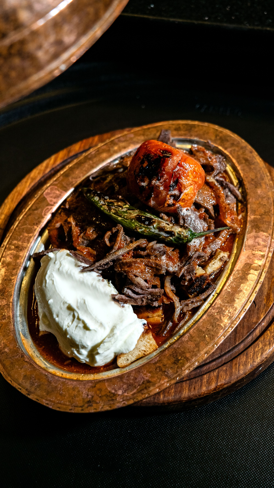
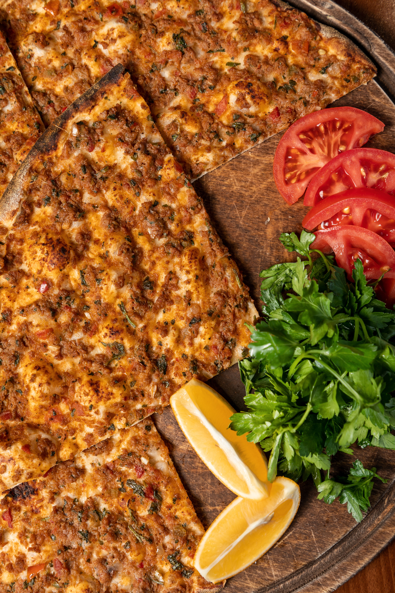
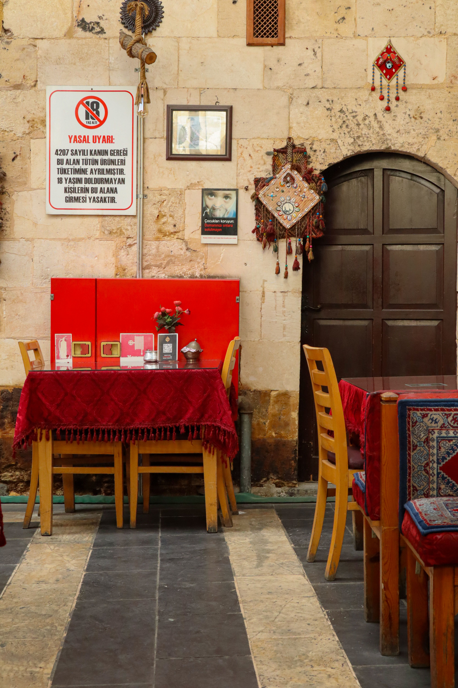
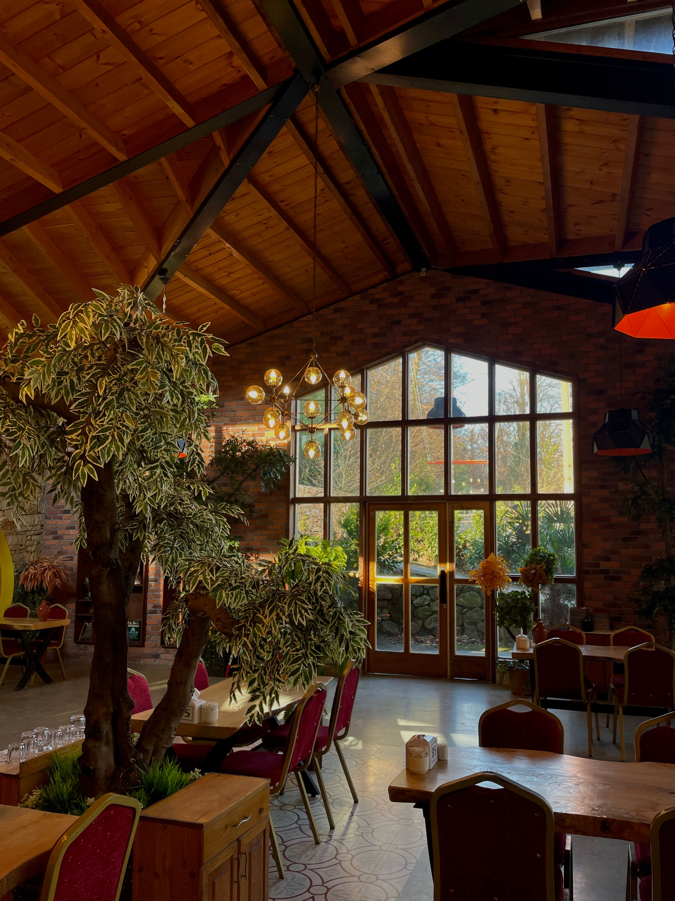
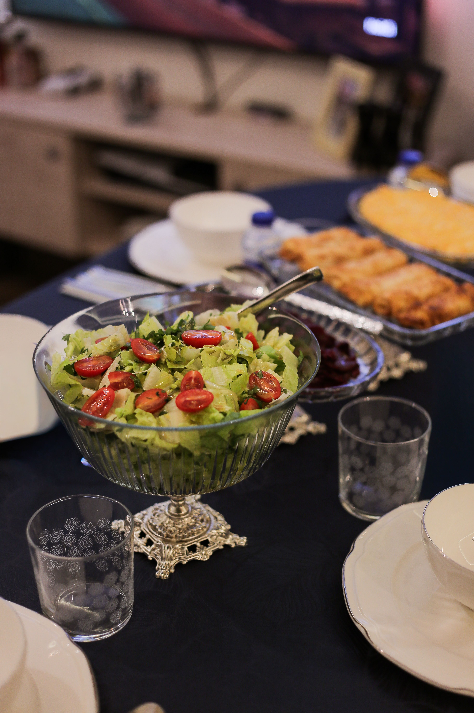
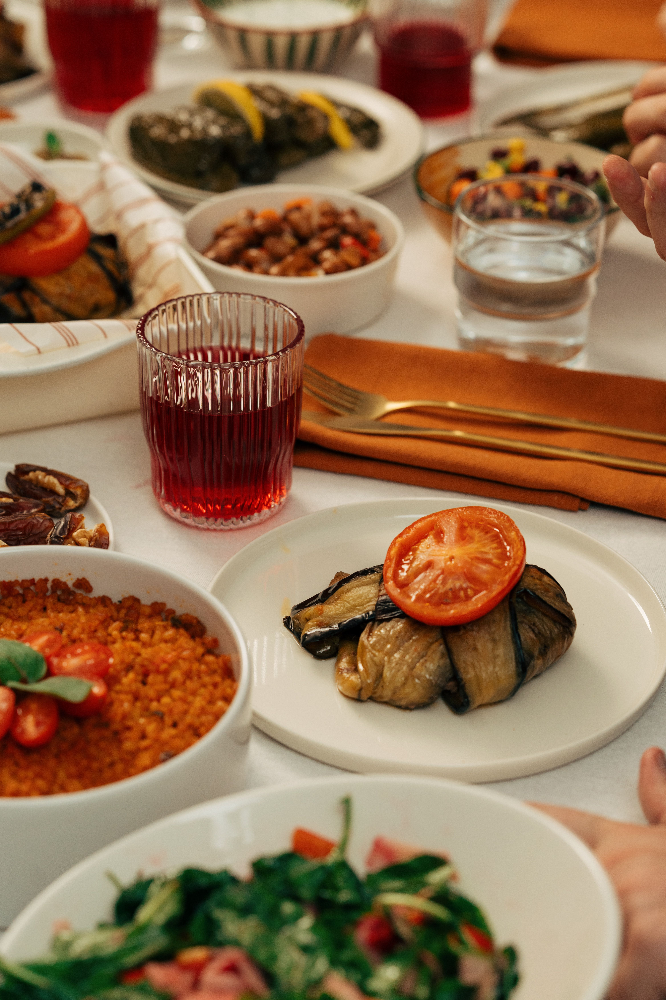
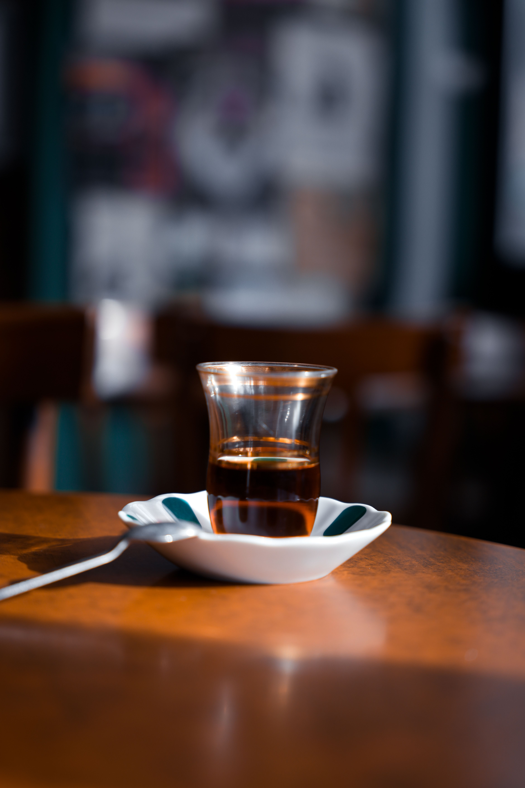
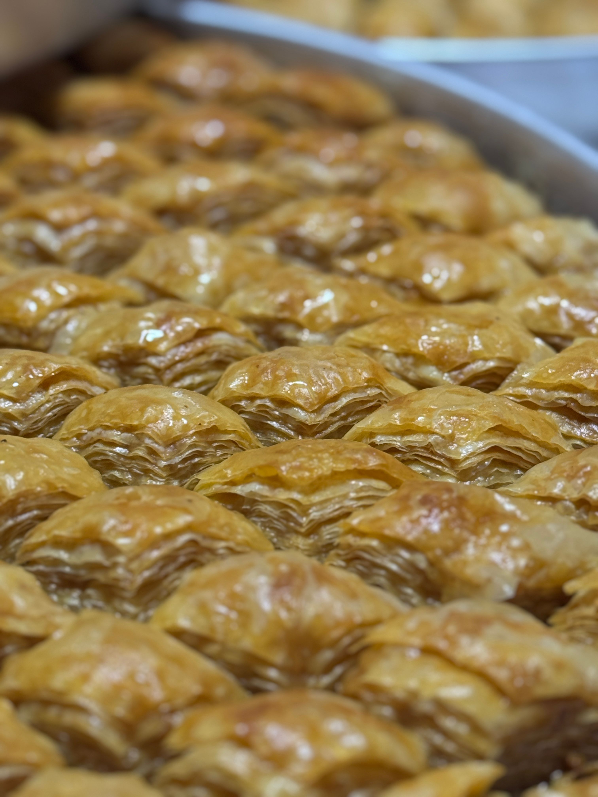

İskender Kebab
Tender doner served over warm pide bread with tomato sauce, yogurt, and melted butter.
$18AUTHENTIC TURKISH CUISINE
Discover traditional Turkish flavors, crafted with fresh ingredients and served with the warmth of Turkish hospitality.
FROM OUR KITCHEN
Timeless recipes, authentic flavors, and ingredients chosen with care.

Tender doner served over warm pide bread with tomato sauce, yogurt, and melted butter.
$18
Thin, crispy Turkish flatbread topped with seasoned minced meat, herbs, and vegetables.
$12
Layers of delicate pastry filled with pistachios and finished with fragrant syrup.
$9OUR STORY
At Sofra, we believe Turkish cuisine is more than food. It is a celebration of family, tradition, and togetherness.
Inspired by the rich culinary heritage of Türkiye, our kitchen brings classic recipes to life with fresh ingredients and a modern touch.
Discover Our StoryA GLIMPSE OF SOFRA
Step inside and experience the warmth, flavors, and atmosphere of Sofra.






GUEST EXPERIENCES
“The flavors were incredible and the atmosphere felt so warm and welcoming. A truly memorable dining experience.”
“The İskender Kebab was absolutely delicious. Everything tasted fresh, authentic, and beautifully prepared.”
“From the food to the hospitality, Sofra captures the spirit of Turkish dining beautifully.”
COME VISIT US
Reserve your table and join us for an unforgettable Turkish dining experience.
123 Istanbul Street
Your City, Pakistan
Opening Hours
Monday – Sunday
12:00 PM – 11:00 PM
Phone
+92 300 1234567